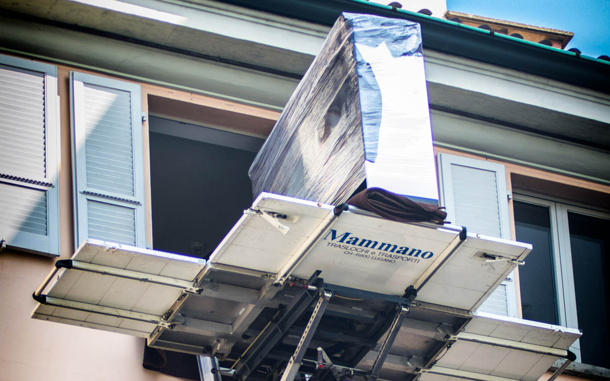

Deposito mobili, sgomberi e imballaggi a Lugano.
Tre servizi che completano il trasloco o si possono richiedere da soli: custodiamo i vostri mobili, liberiamo gli spazi che non usate e vi forniamo il materiale per imballare bene.
In breve
Mammano Traslochi offre a Lugano e in Ticino deposito di mobili e oggetti in magazzini videosorvegliati, per brevi o lunghi periodi; sgombero di appartamenti, cantine, solai e uffici in collaborazione con gli enti di smaltimento; scatoloni e materiale da imballaggio professionale.

Deposito
Deposito mobili videosorvegliato in Ticino.
La nuova casa non è ancora pronta? State ristrutturando o partite per un periodo all'estero? Ritiriamo mobili e oggetti, li imballiamo e li custodiamo finché vi servono. Poi li consegniamo dove volete.
- Depositi videosorvegliati
- Mobili protetti e imballati prima dello stoccaggio
- Per poche settimane o per periodi lunghi
- Ritiro e riconsegna con i nostri mezzi

Sgomberi
Sgombero di appartamenti, cantine e solai.
Svuotiamo abitazioni, cantine, solai, uffici e locali commerciali, anche dopo una successione o prima di riconsegnare un appartamento in affitto. Collaboriamo con gli enti di smaltimento per separare e smaltire correttamente mobili, ingombranti e materiali.
- Appartamenti e case, anche completamente arredati
- Cantine, solai e garage
- Uffici e locali commerciali
- Smaltimento tramite enti autorizzati
Imballaggi
Scatoloni e materiale da imballaggio.
Scatoloni
Di varie misure, per libri, stoviglie, vestiti e documenti.
Protezioni
Carta, pluriball, film e coperte per mobili, quadri e oggetti fragili.
Imballaggio completo
Eseguito dal nostro personale, stanza per stanza.
Domande frequenti
Domande su deposito e sgomberi.
Per quanto tempo posso lasciare i mobili in deposito?
Per il tempo che vi serve, da poche settimane a periodi più lunghi. Durata e costi li definiamo nel preventivo in base al volume.
Il deposito è sorvegliato?
Sì, i depositi Mammano sono videosorvegliati e i mobili vengono protetti e imballati prima dello stoccaggio.
Cosa succede agli oggetti sgomberati?
Separiamo i materiali e li consegniamo agli enti di smaltimento competenti. Gli oggetti che volete conservare li trasportiamo o li mettiamo in deposito.
Fate sgomberi anche senza trasloco?
Sì, lo sgombero di cantine, solai, appartamenti o uffici si può richiedere anche come servizio singolo.
Vi serve spazio o un deposito?
Diteci cosa c'è da custodire o sgomberare: vi inviamo un preventivo gratuito.